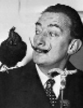

Salvador Dali (1904-1989), yirminci yüzyılın en kışkırtıcı ve acayip sanat eserlerinin bir kısmını üretmek için gerçeküstücü fantezinin vahşi uçuşlarıyla saf, akademik tekniği birleştirdi.

Dali, İspanya, Katalonya’da doğdu. 1921’de şair Garcia Lorca ve yönetmen Luis Bunuel ile tanıştığı Madrid’te San Fernando Güzel Sanatlar Akademisi’ne kaydoldu. İki yıl içinde Dali, öğrencileri isyana teşvik etmekten ve öğretmenlerinin eserlerinin değerlendirecek kadar bile nitelikli olmadığını iddia etmekten akademiden atıldı.
1929’da Dali, gerçeküstücü akıma katıldığı Paris’e hareket etti. Paranoyanın yaratıcı potansiyeli ile merakı uyanan Dali, “paranoyak eleştirel yöntem” adını verdiği bir yöntem geliştirdi. Gerçeküstücü felsefeye göre paranoya, şeyleri çoklu açılardan kavrama becerisiyle nitelendirildi ve bu yüzden dünyayı istikrarsızlaştırmanın bir aracıydı. Bundan ilham alan Dali, daha güçlü bir sanat yaratabileceğine inandı.
Dali’nin klasik eserlerinden olan Hafızanın Dayanıklılığı (1931), şekli çarpıtılmış bir kafanın üstünde eriyen bir cep saatindeki yalın bir manzaradır. Yakınlarında, bir üçüncüsü sürünen karıncalarla kaplı olan iki tane daha eriyen saat vardır. Tuhaf sahne, bir rüya halinde zamanın çarpıtılmasını andırır.
1929’da Dali, aynı zamanda Bunuel ile yaptığı iki filmden biri olan Endülüs Köpeği adlı bir gerçeküstücü film üzerinde de çalıştı. Aynı yıl, eşi olan Gala ile tanıştı ve Gala elli yıldan fazla onun ilham perisi oldu. Bir yıl sonra o ve Bunuel, Altın Çağ filmini yazdılar ve çektiler.
Yıllar boyunca Dali, insanları şok edip büyülemeye devam etti. 1936’da Time dergisine kapak oldu ve 1937’de Marx Kardeşler için hiçbir zaman çekilmeyen bir senaryo yazdı. 1930’ların sonlarında sağ kanat siyasi görüşlerinden ve hırslı bir şekilde ticarî başarı peşinde koşmasından dolayı gerçeküstücüler tarafından kabul görmedi. 1940’da Dali, 1955’e kadar yaşayacağı Amerika Birleşik Devletleri’ne taşındı. Amerika’da kalışı süresince Dali, Walt Disney tarafından Fantezi adlı bir çizgi filmi tasarlamak üzere davet edildi. Katkıları ancak 2003’de, 1940’dakinin revize edilmiş bir versiyonu çıkarıldığı zaman, halkla paylaşıldı. Dali, aynı zamanda Alfred Hitchcock’un klasik filmi Büyülenmiş (1945) için bir rüya bölümü de yarattı. Dikkat çekmeyi her zaman arzulayan Dali, Benim Mısram Ne? adlı 1950’lerin popüler bir televizyon programında gizemli misafir olarak iki kez halkın karşısına çıktı.
Dali, yaşamının son yıllarını İspanya’da geçirdi. 1984’te esrarengiz bir yangında kötü şekilde yanarak yaralandı. Beş yıl sonra, tüm servetini ve sanatını İspanyol hükümetine bırakarak öldü. Bugün St. Petersburg ve Florida’da birer tane ve İspanya’da üç tane olmak üzere, eserlerine geniş ölçüde yer veren çeşitli müzeler bulunur.
EK BİLGİ:
1. Mayıs 1955’te Dali, Jan Vermeer’in “Dantelacı”sının, Paris yakınlarındaki Vincennes Hayvanat Bahçesi’ndeki gergedan kafesinde oturur hâlini betimleyen, paranoyak-eleştirel bir versiyonunu yaptı.